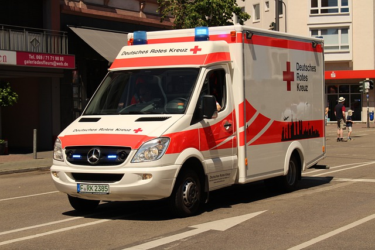

Servicio de Rescate
Contamos con ambulancias con el todo el equipo multidisplinario de rescate
Contamos con equipo DEA a cargo de los mejores profesionales,Nuestros pacientes son estabilizados en el lugar del incidente, si la ocasión lo amerita se traslada a su centro asistencial más cercano de acuerdo con su plan.